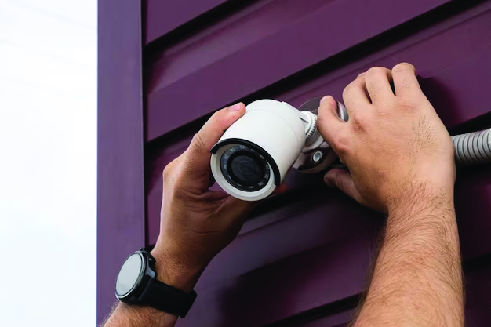
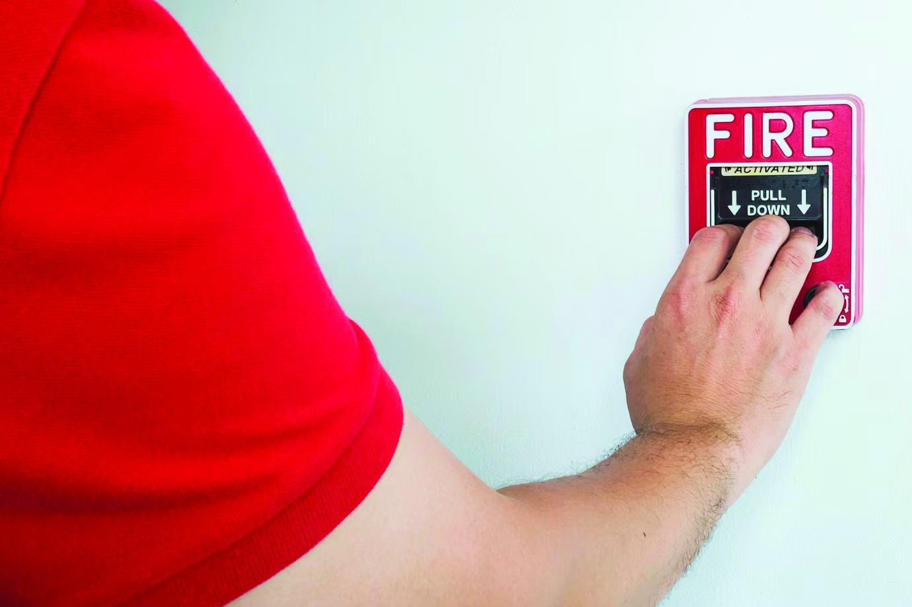

Security Consulting
Expert assessment and custom security system design — from upgrades to full system installations.
Expert assessment and custom security system design — from upgrades to full system installations.

Professional installation — monitor remotely, deter crime, and lower insurance costs.

24/7 monitoring, remote access, fire and gas detection — custom-designed for your property.

Certified fire prevention, evacuation assistance, first aid, and emergency planning services.

24/7 dispatch — average response under 30 minutes. Cost-effective protection against theft and vandalism.

Armed and unarmed guards — fully certified. Entrance monitoring, emergency response, and round-the-clock security.